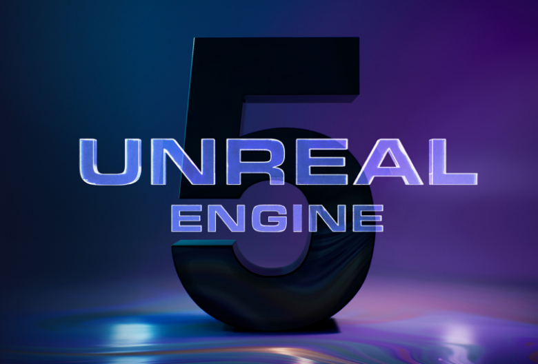

Co-op Survivor FPS
1인칭 FPS × 뱀파이어 서바이벌 × 4인 협동 로그라이트 (PVE)
레퍼런스 The Spell Brigade. 수백 마리의 적 스웜을 경량으로 처리하는 서바이버형 슈터를 목표로 설계했습니다.
레퍼런스 The Spell Brigade. 수백 마리의 적 스웜을 경량으로 처리하는 서바이버형 슈터를 목표로 설계했습니다.

Co-op Survivor FPS는 Unreal Engine 5.7 기반의 1인칭 협동 PVE 로그라이트입니다. The Spell Brigade를 레퍼런스로, 최대 4인이 함께 수백 마리(~300-500)의 적 스웜을 상대합니다.
핵심 설계 원칙은 Flow-Field 길찾기 · 스티어링 · SignificanceManager · Push Model 복제로 대규모 군중을 서버 권위 하에 처리합니다. GAS는 플레이어와 보스/엘리트에만 적용합니다.
런 기반 진행 구조로, 레벨업·미션 클리어 시 전역 프리즈 카드 선택을 통해 빌드를 강화하고, RunDirector가 스케줄에 따라 미션과 보스를 배치합니다. Steam 기반 세션/로비와 Seamless Travel로 4인 협동을 구현했습니다.
기간 2026.05.28 ~ 진행중 · 인원 1인 (생성형 AI 상시 활용 — 아래 "AI 협업 방식" 참조)
수백 마리의 적을 개별 NavMesh·StateTree 없이 처리하기 위해 Flow-Field 길찾기 + 스티어링 + SignificanceManager 기반 LOD + Push Model 복제 구조를 설계. 적은 경량 HealthComponent와 비-GE 데미지로 두고, GAS는 플레이어/보스에만 한정해 액터당 비용을 최소화했습니다.
Hitscan · Projectile · ChargeLaser · Melee 발사를 GameplayAbility로 구현하고, WeaponInstance + Fragment 모디파이어로 데이터 주도 무기 시스템을 구성. 레벨업 시 전역 프리즈 카드 선택으로 런마다 달라지는 빌드 다양성을 제공합니다.
RunDirectorSubsystem이 스케줄 데이터에 따라 미션과 보스를 진행하고, GameFlowSubsystem이 메뉴 → 로비 → 런 → 결과의 전체 흐름을 상태 기반으로 관리합니다.
OnlineSubsystem(Steam) + SteamSockets 기반 세션/로비를 구축하고, Seamless Travel로 로비→런 전환을 처리. 서버 권위 + Push Model로 대규모 스웜 환경에서도 복제 비용을 통제합니다.
이 프로젝트는 처음부터 생성형 AI를 상시 도구로 두고 진행했습니다. 아래는 "AI를 썼다"가 아니라 AI 산출물을 어디까지 믿지 않을 것인가를 정한 규칙과, 그 규칙이 나오게 된 사고 기록입니다.
작업 단위마다 조사 → 플랜 게이트 → 사용자 승인 → 구현 → 검증 → 머지 레드팀 게이트를 통과해야 main에 들어갑니다. 두 게이트는 설계한 주체와 분리된 별도의 적대 리뷰어가 맡습니다. 지적을 기각하려면 근거(코드 인용 · 실측치 · 제1원리 조항)를 대야 하고, 못 대면 기각이 아니라 미해결로 남습니다. 최종 판정은 하위 모델에 위임하지 않으며, 게이트 지적을 반영한 커밋이 이력에 그대로 남아 있습니다.
ADR 14건 중 4건이 후속 결정으로 완전히 대체됐고, 2건은 일부 항목만 대체됐습니다. 1인칭 팔 하나를 두고 ADR 0002~0006 다섯 문서가 이어지며 그중 3건이 뒤집혔습니다. 문서를 지우거나 덮어쓰는 대신 상태: 대체됨(→ NNNN)과 대체 대상/계승 대상을 양쪽 문서에 남겨, 무엇이 왜 뒤집혔고 무엇이 계승됐는지가 읽히도록 했습니다. 결정이 바뀐 계기는 대부분 실플레이 판정이었습니다.
^Result: 줄로 판정 — 2026-08-17, 하네스는 exit 0을 보고했지만 UBT는 error C2664로 실패한 상태였습니다. 로그를 리다이렉트하면 $?가 마지막 파이프의 코드라 종료코드가 0으로 뒤집힙니다. 그 알림만 믿었으면 실패한 빌드를 통과로 보고했을 것입니다블루프린트·애님그래프 노드 편집, DataAsset 값 저작, 커브 튜닝, 애니메이션 저작, 게임 실행 검증은 사람이 한다고 못박았습니다. 여러 차례 실제로 부딪힌 뒤 규칙으로 승격된 항목들이라, 이 경계는 사전에 세운 원칙이 아니라 사고 기록에서 나왔습니다.
총모션 저작 툴을 에디터 탭 v1~v3 + 인게임 ImGui 스튜디오까지 4세대에 걸쳐 만들었으나 쓸 만한 결과물이 0이라 2026-08-10 전량 폐기하고, 저작을 Blender / Sequencer+Control Rig / Persona 표준 파이프라인으로 되돌렸습니다. 근본 원인은 툴의 완성도가 아니라 "이미 같은 일을 하는 표준 도구가 있는지"를 착수 전에 검사하지 않은 것이었고, 그 결론이 위의 "착수 전 검사" 규약이 됐습니다. 폐기 후에는 살아남은 데이터·런타임 계약만 명세로 남겼습니다.